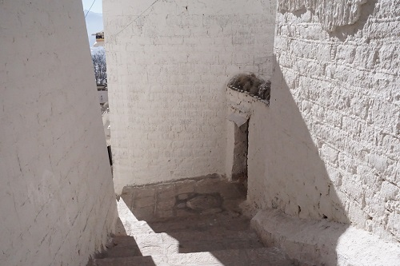
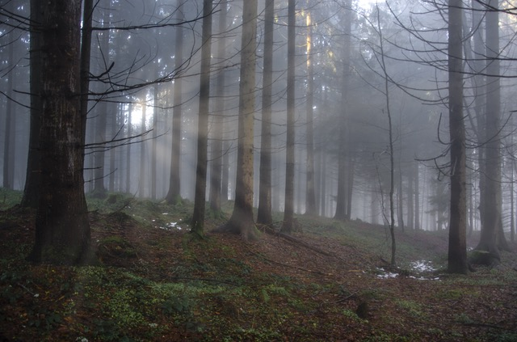

drag all the pics one by one onto the solid blue box
see them explode
 Lhasa Weather
Still talking about my trip to Tibet ... Like in Pittsburgh, in January in Lhasa it was winter too, so it was fairly cold, though not that much colder during the day. There wasn’t any snow. I packed light, and didn’t bring a heavy jacket, so I was pretty cold. The high daily temperature was about 35-40 degrees Fahrenheit, but it was much colder early in the morning and late at night.
Lhasa People
The people were a mix of ethnic Tibetans and Chinese. I didn’t get to observe the people much other than to just see them going about their daily business There were many Chinese police around to keep watch on everything. It was not the tourist season, so I was one of the few Westerners around. It coincided with pilgrimage, so there will pilgrims from far away.
Lhasa Sights
Chinese culture is definitely modernizing Lhasa, and the main strips have a small city feel, though there are not any very tall buildings. It was therefore not overall the image I had in mind of it, which was an image or a less modern society. There are a few older historical parts of Lhasa that preserve more of the old-fashioned traditional feel. The monasteries and temples are mostly either museums now, or are have parts that are active but are also museums or tourist sites at the same time.